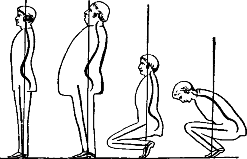

26. Mechanics Of The Skeleton
Description
This section is from the book "Animal Physiology: The Structure And Functions Of The Human Body", by John Cleland. Also available from Amazon: Animal Physiology, the Structure and Functions of the Human Body.
26. Mechanics Of The Skeleton
By the contraction of muscles passing over joints and attached to bones, the parts of the skeleton are thrown into different positions, so that we are enabled to support ourselves in different attitudes and to move about.
For the support of the body, it is first of all necessary that the centre of gravity be within the basis of support, whether that consist of one foot or of both; and to accomplish this the body is instinctively balanced by compensatory deviations of its different parts from the vertical position. The weight of the body in standing falls on the arch of the instep, the piers of which are the heel and the balls of the toes. When the feet are together and the knees straight, both the tibia and the femur are thrown forwards further at their upper ends than their lower, and over-extension of the knee is prevented by the construction of that joint; while the weight transmitted from the vertebral column is received by the haunch bones at a point further back than where these bones articulate by the hip-joints with the thigh bones. The leg is prevented from falling forwards over the foot at the ankle joint by the action of the muscles of the calf, the soleus and gastrocnemius ; and this is probably the only instance, in the standing posture, of a considerable weight being permanently supported by muscular power. At the hip-joint the weight, being behind, makes tense the ligaments in front; and the muscles passing over the back of that joint, while they may be felt to be rigid during their activity in recovering the body from stooping, are flaccid when the erect position is attained. The vertebral column is balanced by being curved in different directions: in the loins it is thrown forwards; where it supports the chest it is curved well backwards; it turns forwards again in the upper part of the chest and at the root of the neck; and on the top of the column the head maintains its position by balance. Thus it will be observed that in preserving the erect posture, the muscles principally act in steadying the body, but have little of its weight thrown on them; and this is exceedingly important, as muscular contraction is a vital action involving expenditure of force, and very exhausting.
Fig. 27. Illustrates the preservation of the centre of gravity within the basis of support.
The body is supported with still less muscular effort in the position called standing at ease than at attention. In standing at ease the weight is borne principally on one foot, while the other assists lightly as a prop. The limb on which support is made has the knee straight, and is inclined above towards its own side, so as to bring the weight of the trunk over the foot; the haunch of the other side is allowed to drop to a lower level than its fellow, sending the lower end of the vertebral column into an oblique position; and the trunk is kept vertical by the column being thrown into a spiral curve.
When a heavy weight is carried in front of the body, the trunk is thrown sufficiently back to bring the centre of gravity of the whole mass within the basis of support; for this reason portly persons, in whom the weight of the abdominal region is greatly increased, hold themselves 14 D particularly erect. When the upper part of the body is bent forward, the lower part is carried backwards; and if the knees be bent, the projection forwards of the legs is balanced by the bending backwards of the thigh. When the knees are completely bent, the heel is raised from the ground, because the joints at the balls of the toes are required to supplement the ankle in bending the leg sufficiently down to bring the centre of gravity forwards over the base of support; and that is the reason why, in such a position, the heel is more raised when the trunk is upright than when it is stooped forwards.
27. In walking and running the weight of the body is thrown from one limb to the other alternately, and, except in exceedingly slow marching, balance is not yet completely established on one limb when the weight is shifted to the other. Before the limb which is advanced reaches the ground, the body is propelled forwards by the straightening of the ankle of the foot which is behind; it is then pulled over on the hip of the advanced limb by the muscles on the outside of that joint (gluteus medius and minimus), and, especially in long steps, it is drawn forwards to the advanced limb by a strong mass of muscles extending between the pelvis and inside of the thigh (the adductors).
The difference between walking and running is twofold. First, in walking the heel is brought to the ground, while in running it is not; yet the foot, at the moment when it is used to propel the body in running, is as advantageously placed as in walking; for the leg is so much sloped forwards that the angle between it and the foot is quite as sharp as it ever is in walking. Secondly, whereas in walking the whole propulsive action is from the foot, in running, the knee and hip-joints being both greatly bent, a vast additional impulse is given by their simultaneous extension. So also in leaping, all the joints of the lower limb are flexed in preparation for the leap, and the impetus given by their sudden extension propels the body through the air. But leaping differs from running, in that the limbs are extended together instead of acting alternately.
28. In the movements of the skeleton, all the three orders of levers are employed. In extending the fore-arm, as in boxing, a lever of the first order is illustrated; the hand being the weight, the extensor of the elbow the power, and that joint the fulcrum placed between the weight and power. But when the elbow is straightened in raising the body on the hands, then the superincumbent weight falls at the elbow, between the extensor muscle, which is still the power, and the hand, which is now the fulcrum; and the second order of levers is illustrated. When a weight held in the hand is raised by bending the elbow, the flexor muscles in front of the joint are those which act; and, as they are situated between the fulcrum and weight, a lever of the third order is brought into action.
Fig. 28. The three Orders or Levers, illustrated at the Elbow.
The muscles of the calf (the gastrocnemius and soleus), passing down to the tendo A chillis, are concerned in actions illustrating all three kinds of lever. When the foot is raised and the toes depressed, as in working a pedal, the weight is at the toes, and the ankle-joint is the fulcrum of a lever of the first order; when we rise on tiptoe it is the muscles of the calf which* raise the heel, the fulcrum is at the toes, and the weight of the body falls on the ankle after the fashion of a lever of the second order; and, lastly, in the slighter action of the same muscles, when the heel is kept to the ground by the weight of the body, the force which prevents the body falling forwards is applied at the upper attachments, while the ankle is the fulcrum and the forward inclination of the body above is the resistance, so that the mechanism is that of a lever of the third order.
Fig. 29. The three Orders of Levers, illustrated in the Foot.
Continue to: